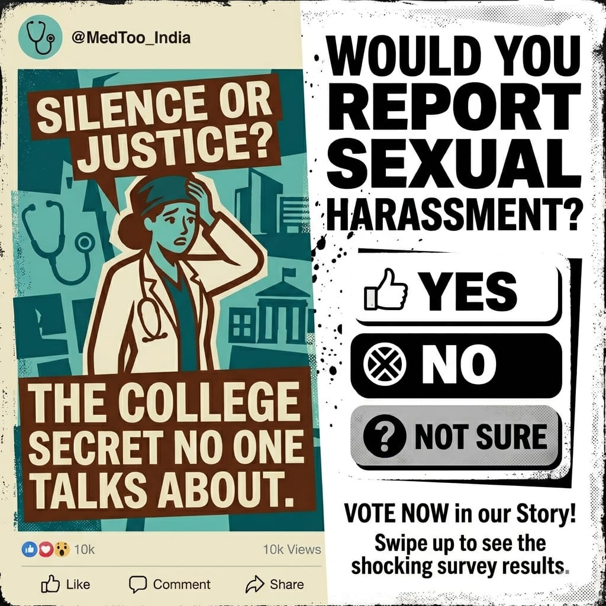
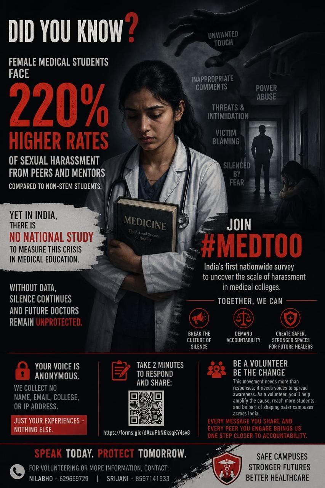
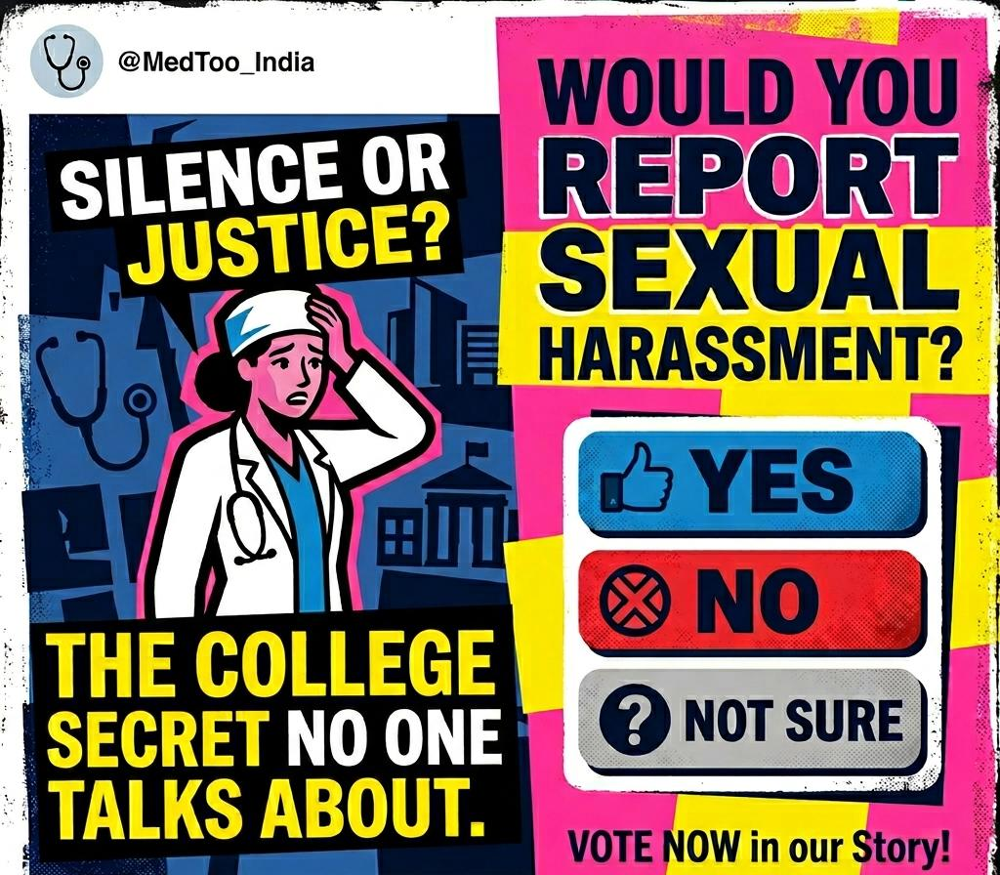
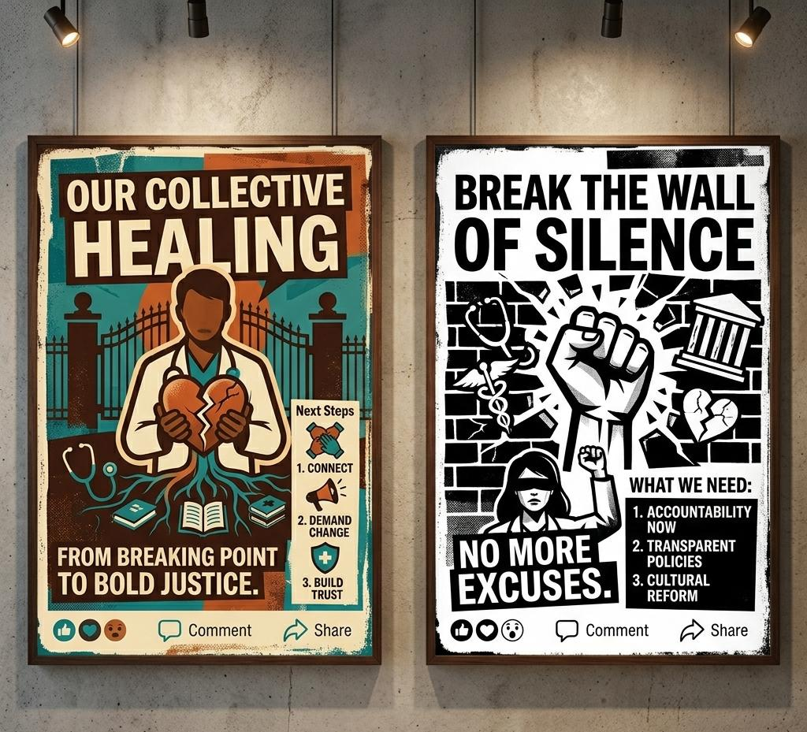
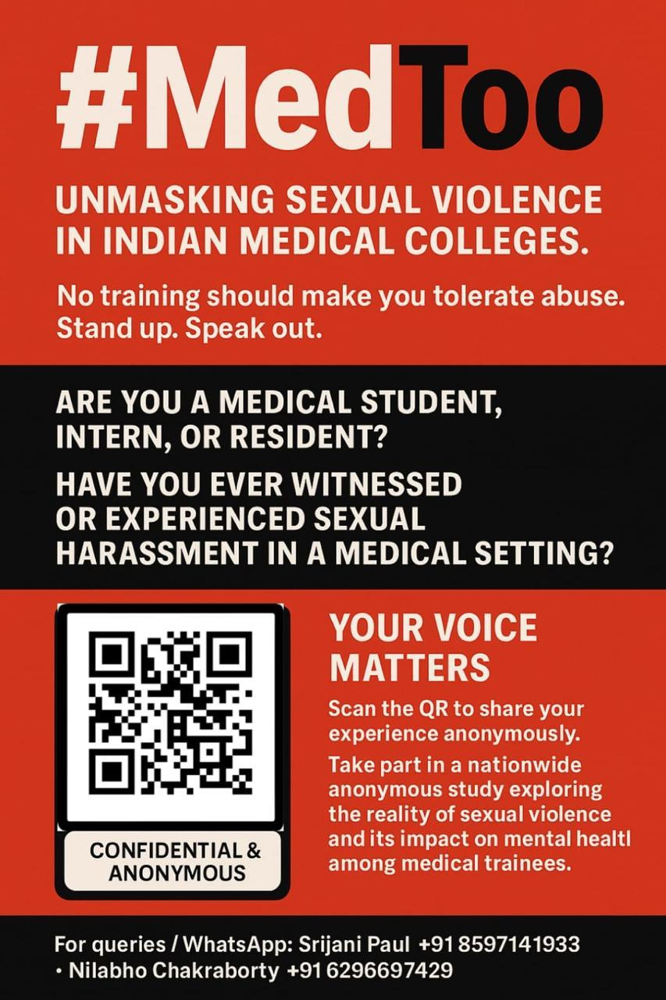

It happens in our hospitals. It happens in our classrooms. It's time we talked about it.
Sexual violence against medical students in India is underreported, understudied, and ignored. We're changing that — one honest response at a time.
Fully anonymous · Voluntary · Confidential

The campaign documents unwanted touch, inappropriate comments, power abuse, threats and intimidation, victim blaming, and silencing by fear.
The data doesn't exist yet. That's the problem.
higher rates of sexual harassment faced by female medical students from peers and mentors, compared to non-STEM students.
Yet in India, there has been no national study to measure this crisis in the healthcare education system. Without data, silence continues — and future doctors remain unprotected.

Break the culture of silence
Naming what is normalised is the first act of resistance against a system built to keep survivors quiet.
Demand accountability
Evidence forces institutions, regulators, and the law to answer for what they have allowed to continue.
Create safer spaces
Stronger, safer training environments for the next generation of healthcare providers — that's the goal.
Everywhere it's been measured, it's there.
Across countries, between a third and more than half of medical trainees report sexual violence. India's own data is sparse and geographically skewed — which is exactly the gap this study fills.
of women doctors in Sri Lanka report workplace sexual harassment in their careers.
Vidanapathirana et al., Lancet Reg Health SEA 2025of medical students & registrars in Belgium reported sexual violence; women twice as likely.
Geldolf et al., BMC Med Educ 2021of Indian healthcare workers experienced sexual harassment (2021 data, no standard definition).
Tilak et al., Indian J Community Fam Med 2025disclosure rate. In a Banaras Hindu University study, none reported to police.
Binder et al. 2018; Nandini et al. 2022medical students, interns, and residents have already responded — from colleges and states across India.
Tally updated periodically as new responses arrive nationwide

If it happened to you, would you report sexual harassment?
In real life, only 0–21% of affected medical trainees ever disclose. Reporting isn't a personal failing — the system makes it unsafe.
That silence is exactly what this research exists to break.
Add your voice to the data →A few honest minutes. Nothing traceable.
A short, structured survey
A Google Forms–based questionnaire with clear, structured questions. It takes only a few minutes to complete.
Completely anonymous
No name, roll number, email, IP address, or institution identifier is collected. Your response cannot be traced back to you.
Confidential & research-only
Responses are used solely to understand the scale of the problem and advocate for systemic change. Nothing else.
Entirely voluntary
You choose whether to take part, and you can stop at any point. You are never obligated to answer any question.
Who is eligible: All medical students across India — current undergraduates, postgraduates, interns, and residents — regardless of whether you have personally experienced harassment. Every response strengthens the evidence.
Support & helplines
If anything here brings up distress, please reach out. These services are free and available across India. In an emergency, call 112.
NCW Helpline
The National Commission for Women's helpline for women in distress, including sexual harassment and workplace complaints.
7827 170 170Tele-MANAS
India's national 24×7 mental health support line by the Ministry of Health. Free counselling in multiple languages.
14416Aks Foundation
A confidential helpline supporting survivors of sexual violence and harassment with counselling and guidance.
+91 87930 88814Women Helpline (181)
The national 24-hour Women Helpline for emergency and non-emergency support and immediate assistance.
181iCall (TISS)
Free telephone & email counselling by trained mental-health professionals at the Tata Institute of Social Sciences.
+91 91529 87821Every medical college is required by the POSH Act, 2013 to have an Internal Complaints Committee. You have the right to approach it — and to be heard without retaliation.
Rigorous research. Real names behind it.
Medical training is often described as rigorous, hierarchical, and demanding. What is spoken about far less is how frequently sexual harassment and abuse are normalised within this system — and how often survivors are expected to stay silent "for the sake of training."
This nationwide anonymous study aims to document the real prevalence of sexual harassment and sexual violence in Indian medical colleges, and to examine its impact on mental health and academic life among medical students, interns, and residents.
It is led by Srijani Paul (Principal Investigator) and Nilabho Chakraborty (Co-Investigator), with academic support and collaborators from AIIMS and other leading medical institutions across India, and professionals from Sri Lanka and the USA.
Meet the team & read the published viewpoint →"Help us build a dataset that cannot be ignored. The future generations don't have to fight this battle anymore." — The MedToo India team
Ethics & IEC approval. This study is conducted in accordance with institutional ethics review. Institutional Ethics Committee (IEC) Approval No.: . Participation is voluntary, anonymous, and confidential.
Breaking point to bold justice.


Accountability now
Transparent policies
Cultural reform
Your voice is the data.
It takes five minutes. It is completely anonymous. And it could change how Indian medical institutions respond to sexual violence — forever.